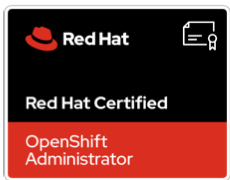

◫
Kubernetes & OpenShift
Cluster operations, workloads, RBAC, platform automation
Building reliable platforms, automating delivery, and making production systems observable, secure, and resilient. Currently working at Société Générale.
I enjoy solving operational problems through automation, platform thinking, and practical engineering.
I'm a DevOps and Platform Engineering professional focused on improving how teams build, deploy, operate, and observe applications. My work spans Kubernetes platforms, CI/CD, infrastructure automation, GitOps, security tooling, and production troubleshooting.
I believe good platform engineering is about more than deploying infrastructure. It's about creating repeatable workflows, reducing toil, improving recovery, and giving development teams a dependable path to production.
A practical toolkit across modern platform and reliability engineering.
Cluster operations, workloads, RBAC, platform automation
Argo CD, ApplicationSets, GitHub Actions, Azure DevOps
Ansible, Terraform, repeatable provisioning
OpenTelemetry, metrics, traces, Jaeger, Elasticsearch
Trivy, CrowdStrike Falcon, policy and access controls
System troubleshooting, DNS, certificates, HA fundamentals
AWS, Azure, cloud-native architecture fundamentals
Python, Bash, YAML, operational tooling
Contributing to platform engineering and DevOps initiatives, with a focus on reliable delivery, automation, and operational excellence.
Worked across Kubernetes and OpenShift platforms, CI/CD automation, infrastructure operations, security integration, and observability improvements.
Earlier experience in enterprise technology environments, building a foundation in software delivery and operational practices.
Industry credentials across Linux, networking, and OpenShift administration.
Red Hat · Linux system administration
RHCSACisco · Networking fundamentals
CCNA
Red Hat · OpenShift platform administration
View credential ↗Practical engineering guides paired with small tools you can use in real environments.
Understand telemetry pipelines, Elasticsearch and Kibana integration, Kubernetes Operator deployments, VM agents, and generate a starter Collector configuration.
Interested in platform engineering, SRE, automation, or solving complex production challenges?